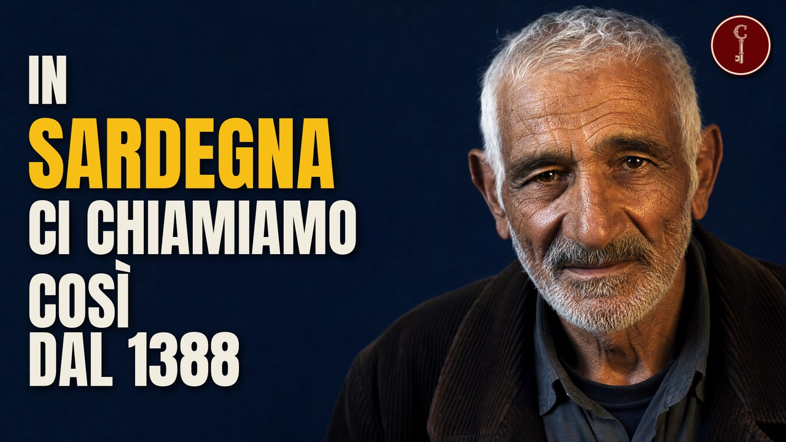

Le radici degli italiani, luogo per luogo. Per ogni video del canale, qui trovi le fonti della ricerca e i crediti di immagini, video e mappe.

Sardegna
32 cognomi sardi medievali ancora in uso oggi

Sicilia
Le radici degli italiani, luogo per luogo. Per ogni video del canale, qui trovi le fonti della ricerca e i crediti di immagini, video e mappe.
